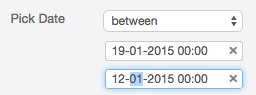
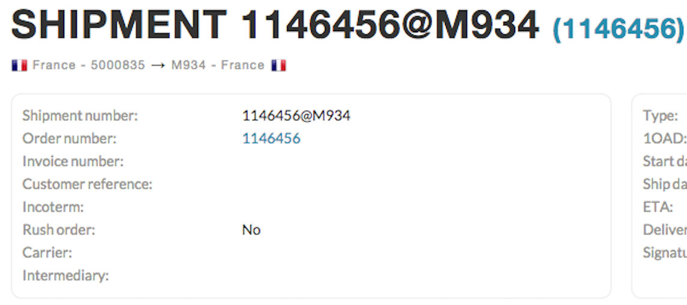
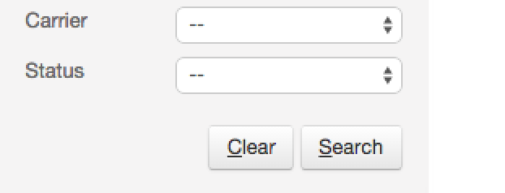

What's new in VCS+ 2.0.3?

New date input field
The new date input file allows you to only use the numeric keyboard. By default the current date is pre-filled. Then you can simply type the day followed by the month and optionally the year and time. You can also use the up arrow to increment the current field and the down arrow to decrement the field. You can also quickly go to the next field using the tab key. This means you do not need to use the mouse anymore nor anything else than the numeric keys allowing to enter date quicker.

Boxed layout
The boxed layout allows you to find the relevant information quicker and faster. Information is also better organised so you can spot the relevant information immediately.

New 'clear form' button
The new 'clear form' button allows you to clear the current search form. This allow you to go faster instead of resetting field one by one.